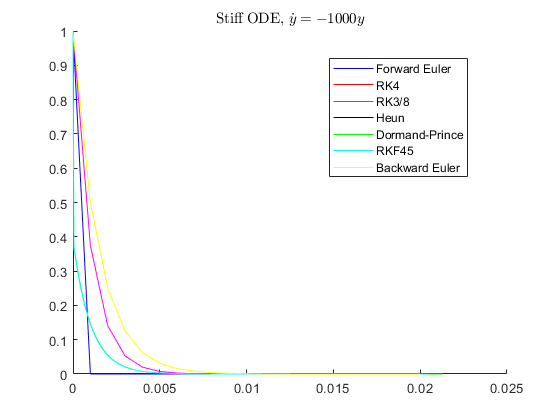

Collection of solvers
For an ODE: 
Contents
Prepare the environment
clc clear all close all
------ Test 1 ------
Simulate a very stiff system
[ta, ya] = euler(@myode1, 1, 0, 0.02, 0.001); [tb, yb] = rk4(@myode1, 1, 0, 0.02, 0.001); [tc, yc] = rk38(@myode1, 1, 0, 0.02, 0.001); [td, yd] = heun(@myode1, 1, 0, 0.02, 0.001); [te, ye] = dormandprince(@myode1, 1, 0, 0.02, 0.001); figure hold on plot(ta, ya, 'b') plot(tb, yb, 'r') plot(tc, yc, 'm') plot(td, yd, 'k') plot(te, ye, 'g') legend('Euler', 'RK4', 'RK3/8', 'Heun', 'Dormand-Prince') title('Stiff ODE, $\dot{y} = -1000y$', 'interpreter', 'latex');
------ Test 2 ------
Lorenz dynamics
[ta, ya] = euler(@myode2, [1 1 1]', 0, 20, 0.001); [tb, yb] = rk4(@myode2, [1 1 1]', 0, 20, 0.001); [tc, yc] = rk38(@myode2, [1 1 1]', 0, 20, 0.001); [td, yd] = heun(@myode2, [1 1 1]', 0, 20, 0.001); [te, ye] = dormandprince(@myode2, [1 1 1], 0, 20, 0.001); figure hold on plot3(ya(1,:), ya(2,:), ya(3,:), 'b'); plot3(yb(1,:), yb(2,:), yb(3,:), 'r'); plot3(yc(1,:), yc(2,:), yc(3,:), 'm'); plot3(yd(1,:), yd(2,:), yd(3,:), 'k'); plot3(ye(1,:), ye(2,:), ye(3,:), 'g'); legend('Euler', 'RK4', 'RK3/8', 'Heun', 'Dormand-Prince') title('Lorenz, $\sigma = 10, \beta = 8/3, \rho = 28$', 'interpreter', 'latex');

------ Test 3 ------
Van der Pol oscillator
[ta, ya] = euler(@myode3, [2 0]', 0, 1000, 0.001); [tb, yb] = rk4(@myode3, [2 0]', 0, 1000, 0.001); [tc, yc] = rk38(@myode3, [2 0]', 0, 1000, 0.001); [td, yd] = heun(@myode3, [2 0]', 0, 1000, 0.001); [te, ye] = dormandprince(@myode3, [2 0]', 0, 1000, 0.001); figure hold on plot(ya(1,:), ya(2,:), 'b'); plot(yb(1,:), yb(2,:), 'r'); plot(yc(1,:), yc(2,:), 'm'); plot(yd(1,:), yd(2,:), 'k'); plot(ye(1,:), ye(2,:), 'g'); legend('Euler', 'RK4', 'RK3/8', 'Heun', 'Dormand-Prince') title('Van der Pol, $\mu = 100$', 'interpreter', 'latex');

------ Test 4 ------
A simple sine wave
[ta, ya] = euler(@myode4, -1, 0, 10, 0.001); [tb, yb] = rk4(@myode4, -1, 0, 10, 0.001); [tc, yc] = rk38(@myode4, -1, 0, 10, 0.001); [td, yd] = heun(@myode4, -1, 0, 10, 0.001); [te, ye] = dormandprince(@myode4, -1, 0, 10, 0.001); figure hold on plot(ta, ya, 'b'); plot(tb, yb, 'r'); plot(tc, yc, 'm'); plot(td, yd, 'k'); plot(te, ye, 'g'); legend('Euler', 'RK4', 'RK3/8', 'Heun', 'Dormand-Prince') title('$\dot{y} = y * sin(t)$', 'interpreter', 'latex');
ODEs to be solved
% A very stiff ODE function ydot = myode1(t,y) ydot = -1000*y; end % Lorenz dynamics function ydot = myode2(t,y) sigma = 10; beta = 8/3; rho = 28; ydot = [sigma * (y(2) - y(1)); y(1) * (rho - y(3)) - y(2); y(1) * y(2) - beta * y(3)]; end % Van der Pol oscillator function ydot = myode3(t,y) Mu = 100; ydot = [y(2); Mu*(1-y(1)^2)*y(2)-y(1)]; end % A simple sine wave function ydot = myode4(t,y) ydot = y*sin(t); end
Solver implementations
% Euler method function [t, y] = euler(odefun, y0, ts, tf, dt) t = ts:dt:tf; y = zeros(length(y0),length(t)); y(:,1) = y0; for k = 2 : length(t) ydot = odefun(t(k), y(:,k-1)); y(:,k) = y(:,k-1)+ydot.*dt; end end % Fourth oder Runge-Kutta function [t, y] = rk4(odefun, y0, tstart, tfinal, dt) t = tstart:dt:tfinal; y = zeros(length(y0),length(t)); y(:,1) = y0; for k = 2 : length(t) yn = y(:,k-1); tn = t(k-1); k1 = dt * odefun(tn, yn); k2 = dt * odefun(tn + dt / 2 , yn + k1 / 2); k3 = dt * odefun(tn + dt / 2, yn + k2 / 2); k4 = dt * odefun(tn + dt, yn + k3); y(:,k) = yn + k1 / 6 + k2 / 3 + k3 / 3 + k4 / 6; end end % Runge-Kutta 3/8 method function [t, y] = rk38(odefun, y0, ts, tf, dt) t = ts:dt:tf; y = zeros(length(y0),length(t)); y(:,1) = y0; for k = 2 : length(t) yn = y(:,k-1); tn = t(k-1); k1 = dt * odefun(tn, yn); k2 = dt * odefun(tn + dt / 3, yn + k1 / 3); k3 = dt * odefun(tn + dt * 2 / 3, yn + - k1 / 3 + k2); k4 = dt * odefun(tn + dt, yn + k1 - k2 + k3); y(:,k) = yn + 1 / 8 * k1 + 3 / 8 * k2 + 3 / 8 * k3 + 1 / 8 * k4; end end % Heun's method function [t, y] = heun(odefun, y0, ts, tf, dt) t = ts:dt:tf; y = zeros(length(y0),length(t)); y(:,1) = y0; for k = 2 : length(t) yn = y(:,k-1); tn = t(k-1); k1 = dt * odefun(tn, yn); k2 = dt * odefun(tn + dt, yn + k1); y(:,k) = yn + 1 / 2 * k1 + 1 / 2 * k2; end end % Dormand-prince method, this is an adaptive method woth vriable time step. function [t, y] = dormandprince(odefun, y0, ts, tf, dt) y(:,1) = y0; eps = 1e-9; % error allowance in one step calculation. k = 2; t = ts; while t < tf yn = y(:,k-1); tn = t(k-1); k1 = dt * odefun(tn, yn); k2 = dt * odefun(tn+dt/5, yn+k1/5); k3 = dt * odefun(tn+dt*3/10, yn+k1*3/40 + k2*9/40); k4 = dt * odefun(tn+dt*4/5, yn + k1*44/45 - k2*56/15 + k3*32/9); k5 = dt * odefun(tn+dt*8/9, yn + k1*19372/6561 - k2*25360/2187 + k3*64448/6561 -k4*212/729); k6 = dt * odefun(tn+dt, yn + k1*9017/3168 - k2*355/33 + k3*46732/5247 + k4*49/176 - k5*5103/18656); k7 = dt * odefun(tn+dt, yn + k1*35/384 + k3*500/1113 + k4*125/192 - k5*2187/6784 + k6*11/84); z_tmp = yn + 5179/57600*k1 + 7571/16695*k3 + 393/640*k4 - 92097/339200*k5 + 187/2100*k6 + 1/40*k7; y_tmp = yn + 35/384*k1 + 500/1113*k3 + 125/192*k4 - 2187/6784*k5 + 11/84*k6; err = abs(y_tmp-z_tmp); % error estimation s = (eps*dt./(2*(tf-ts).*err)).^(1/4); if rms(s) >= 2 y(:,k) = y_tmp; t(k) = t(k-1) + dt; k = k + 1; dt = 2*dt; elseif rms(s) >= 1 y(:,k) = y_tmp; t(k) = t(k-1) + dt; k = k + 1; elseif rms(s) < 1 dt = 0.5*dt; end end end